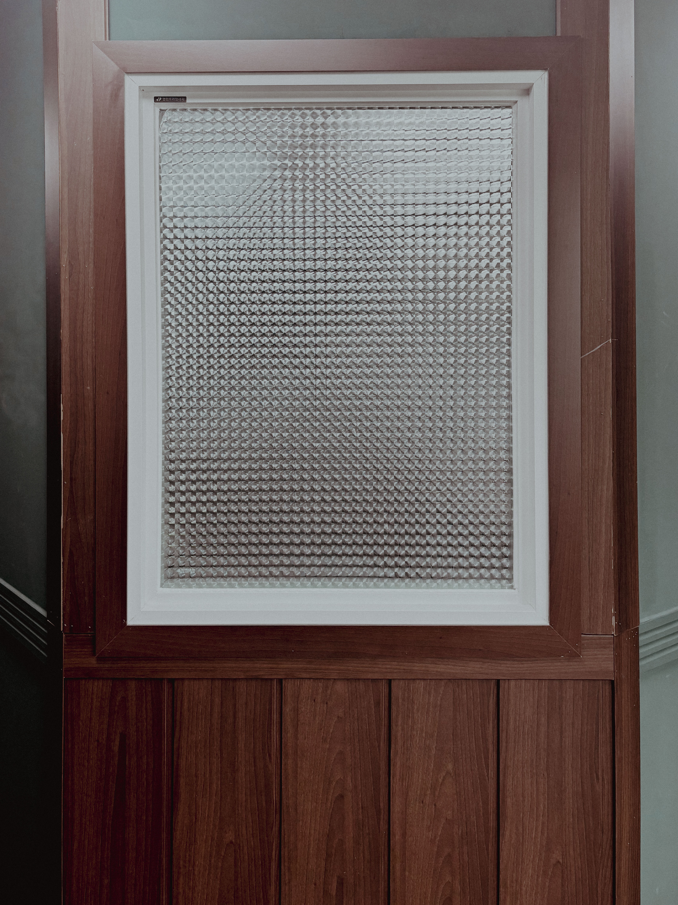
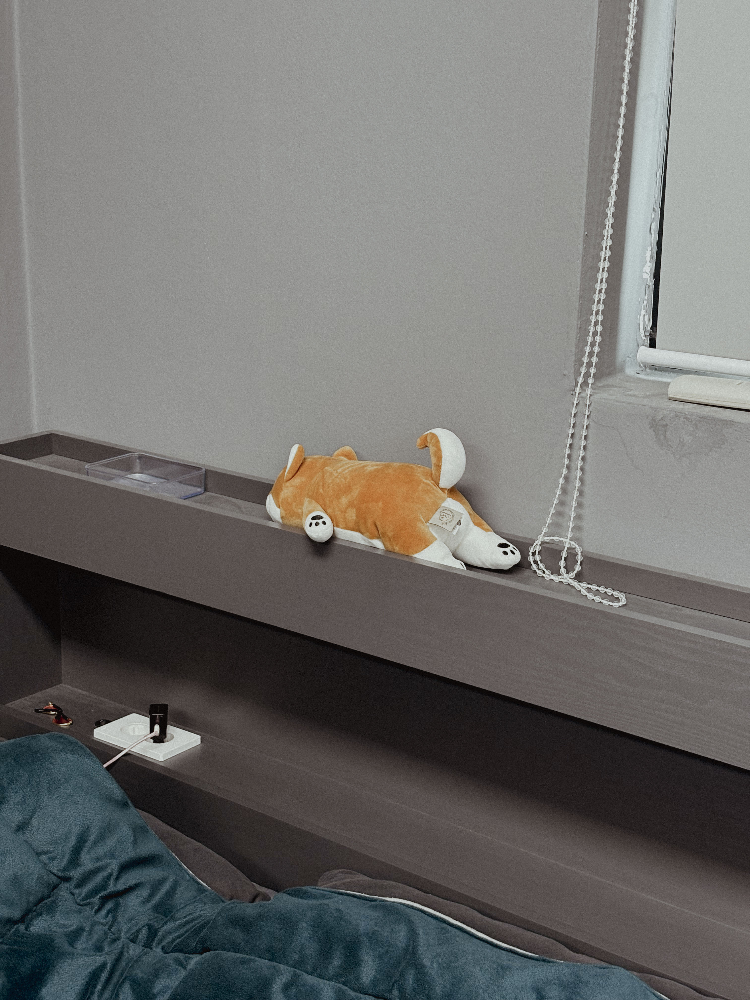
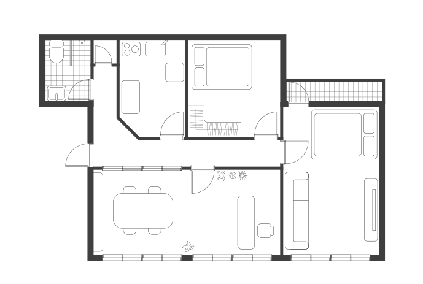
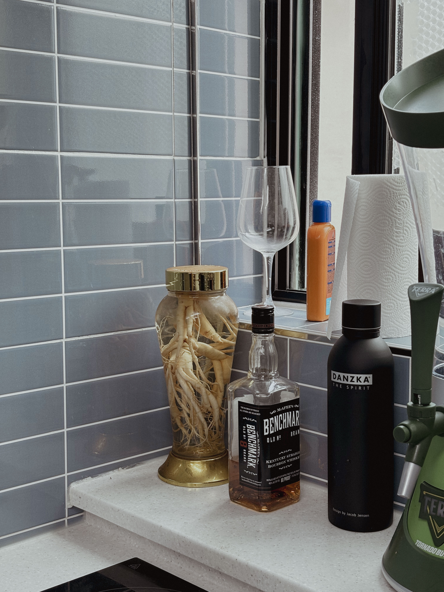
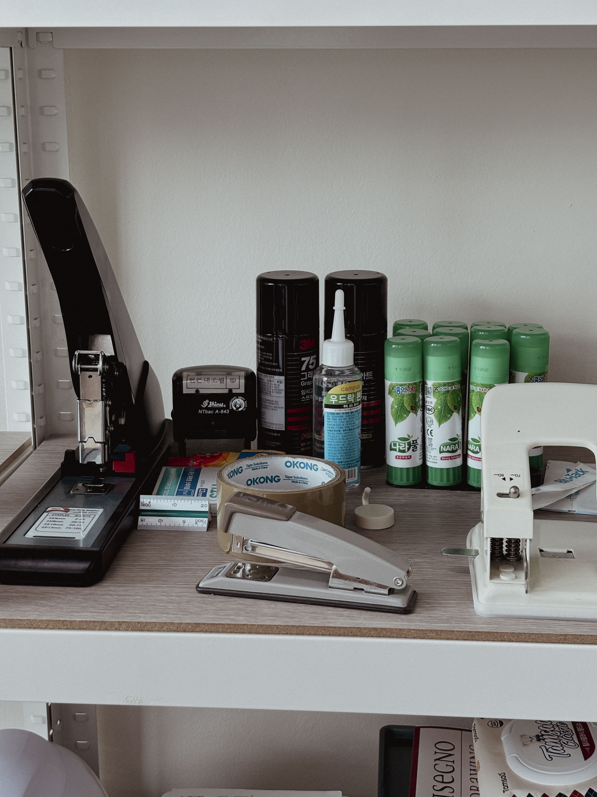
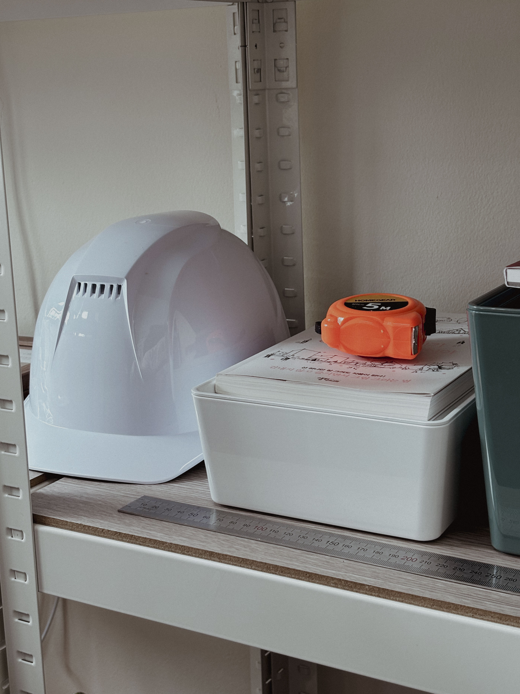

G-ARCH PROJECT

레기님을 알고 지낸 지 조금 되었는데, 과거에 대해선 잘 못들어본것 같아요. 오늘은 레기님의 과거에 대해서 좀 이야기를 해보고 싶어요. 일단 좀 많이 과거로 내려가 볼게요. 어린시절에 레기님은 어떤 사람이었나요? 저는 어렸을 때 꽤나 수줍은 아이였거든요.
저는 진짜 장난기가 많았어요. 정말 장난 엄청 치고, 친구들을 좀 괴롭히고, 물론 당연히 학폭같은건 아니고요.
상대방도 장난이라고 생각한 거 맞죠?
괴롭힌다는 게 표현이 좀 그렇네요. 좀 짓궃은 장난정도로 할게요. 오재미 던지거나, 여자애들 고무줄 끊고 뭐 그런거죠.
지금도 장난치는 거 좋아하시나요? 레고도 좋아하셨다고 들었어요.
네, 장난치는 거 정말 좋아하고, 레고도 정말 좋아해요. 정말 좋아하는데, 비용이 너무 비싸요. 그래서 지금은 하고 있진 못해요. 어렸을 땐 비싼줄 몰랐어요. 옛날에 부모님이 크리스마스 때마다 선물해 주셨거든요.
레고를 좋아했던 게 이후의 삶에 영향을 미쳤을까요? 건축학과로 어떻게 진학하게 됐는지가궁금해요.
건축이라는 건 나한테는 모호하고 뭔지도 몰랐어요. 그냥 뭔가를 만드는 걸 좋아하던 애였어요. 미술도 좋아했고요. 그러다가 고3 때 이제 진로 결정할 때 담임 선생님이 이런 얘길 하셨어요. 집 짓고 살면 먹고는 살거다. 라고요. 너가 가고 싶은게 특별한게 없으면 너도 만드는 거 좋아하니까 그러면 건축 쪽으로 해보는 건 어떻겠냐, 라는 얘기였죠.
담임선생님의 추천으로 건축을 전공하게 된거네요. 그렇게 대학을 와서, 제일 좋아하던 수업이 설계 스튜디오라고 했어요. 건축을 전공하고, 좋아하던 것도 설계고, 지금은 건축가로 살고있잖아요. 그러면 정말 건축쟁이라는 생각이 들어요. 아, 모델링하는 것도 좋아한다고 하셨죠. 그러면 처음 건축학과 왔을 때 부터 좋으셨나요?
너무 재밌었어요. 사실 처음에 제일 좋았던건, 입시에서 벗어나서 해방된 게 제일 좋았고 선배들이랑 동기들이랑 술 마시는 게 너무 좋았어요. 건축도 건축인데 이런 술 문화 같은게 잘 맞았죠. 그리고 1학년때는 설계 스튜디오는 없었고, 다른 이름이었어요. 표현, 미술 실기, 그런 이름이요. 만들고 그리고 이러는 게 재밌더라고요. 교수랑 얘기하는 것도 재밌고. 마음대로 생각하는 거 표현하는 게 좋았어요.
특히 더 재밌었던 학기나 기억에 남는 학부 프로젝트가 있나요?
복학이 꼬여서 제가 4학년때 2학년 1학기 스튜디오도 같이 했어요. 그때 스튜디오 주제가 반지의 제왕을 책이나 영화를 보고 건축적으로 그 영화를 표현하라고 했어요. 처음에는 뭔 소리인지 전혀 이해 감이 안 잡혔어요. 그런데 두 번, 세 번 보다보니까 뭔가를 알겠더라고요. 스케일감이라던지 그런 것들을 공간을 표현하는 데에 많이 적절했어요. 주택설계에 이러한 요소들을 적용하는 것 까지가 프로젝트였는데, 제가 4학년인데 2학년 수업을 들은거니까 도면이나 패널 퀄리티가 훨씬 좋았죠. 그래서 더 재밌었던 것 같아요.
그렇군요.
그 이후에 졸업 하고 계속해서 설계사무소에서만 일했죠?
세 군데에서 했었어요. 첫 번째는 학교 교수님 추천으로 여주에 있는, 시청 근처에 있는 흔히 허가방이라고 불리는 사무소였어요. 제가 여주에서 일하고 싶다고 했었거든요. 여주에 살았어서요. 주로하던 업무는 인허가 대행하는 거죠. 도면도 그리긴 하지만, 딱 인허가 정도의 도면만 그리고요. 그런데 정말 많이 배웠어요. 도면을 배웠다기보다는, 행정처리같은 것들을 많이 배웠죠. 처음에 대형을 갈지, 중형을 갈지, 아뜰리에를 갈지 고민을 했는데, 어딜 가더라도 행정적인 것들을 잘 알 수 있을 거 같지가 않더라고요. 그래서 허가방부터 시작을 해보자 했었죠.
그럼 이 사무실에서 몇년 일하신거에요?
3년정도 했어요. 건축사 자격 받으려고 그렇게 했어요. 힘들었지만 재밌었고요. 그 다음에 건축사 자격 시험 준비하면서 서울에 가기로 했죠. 서울에서 조금 규모가 커진 사무실에서 일을 했는데, 이게 완전 전혀 다른 세계인거에요. 실시설계를 하게 되니까 도면의 디테일이 달라지더라고요. 그 전에는, 실시는 시공사랑 진행하면서 했는데, 이젠 아니게 된거에요. 그리고 전 건축사를 공부하면서 일을 하려고 했는데, 야근도 너무 많고 확대도 상세도 이런게 재미가 없더라고요. 건축사는 커녕 쉴 시간도 없었어요. 그래서 그때 한 1년 반 했나 하다가 이건 안 되겠다.했죠. 그리고 회식 문화가 접대 문화였던 것도 그만두게 된 이유중 하나에요.
아이고, 상상하기도 싫네요. 그럼 이제 마지막 이직을 하신 곳은 어디였나요?
워낙 두 번째 회사에서 당하다 보니까 구인 글 올릴 때 부터 야근은 절대 안하겠다라고 올렸어요. 다들 안 좋아할텐데, 한 곳에서 연락이 온거에요. 그래서 세 번째 회사에 다니게 되었습니다. 건설사의 설계팀에서 일을 했어요. 다세대, 다가구, 오피스텔을 하는 회사였고요. 여기서 많이 배우고, 재밌게 일했어요. 일하면서 건축사 합격하고, 지금 개소를 하게 되었죠.
개소를 하게 된 결정적인 계기같은 것도 있을까요?
건축사를 따고 나서 미묘하게 실장님과 이상한 기싸움이 시작이 되었어요. 그거에 지쳐서 퇴사하고 내 사무실 차려야겠다. 확정하게 되었죠.
그런 이유도 있었군요. 저는 실시에 대한 부담이 커서 과연 내가 건축사를 따더라도 개소를 할 수 있을까 하는 생각도 자주 해요.
저는 실시설계까지는 안하고 있어요. 기획설계, 기본설계, 인허가, 그리고 실시 전 단계까지 하고, 착공 후 사용 승인까지 하죠.
그럼 실시는 누가 하나요?
실시는 알아서 하는 거예요. 시공사에서. 그러니까 서울에서 내가 했던 도면처럼은 혼자서 못하겠더라고요. 비용 맞추는 것도 쉽지 않고요. 실시까지 하는 비용으로 견적을 드리면 여기선 아무도 계약을 안해요. 건물 지으려는 건축주들이 그렇게까지 원하지 않는거죠. 실시까지하면 단가가 전혀 안맞아요. 그러니까 이게 점점 건축 퀄리티가 떨어질 수 밖에 없어요. 건축 서비스 전반적으로요. 단가가 맞으면, 알바를 쓰던 어떻게 하던 저도 할텐데, 그럴 수가 없는거에요.
어떤 말씀이신지 완전히 이해가 되네요. 그럼 이제 궁금한게 생겨요. 조금 짖궃은 질문일 수도 있는데. 고3 때 담임 선생님이 건축을 하면 뭐라도 먹고 산다고 했는데 잘 먹고 사시나ㅏ요? 개소한지 얼마나 됐죠?
개소한지 1년 반정도 되었어요.
보통 처음에 2년이 힘들다고 하잖아요.
전 앞으로도 2-3년은 더 힘들 것 같아요.
전 그런 생각도 해요. 사업했다가 잘 안되면, 뭐 회사 다시 들어가면 되지.
그럴 수도 있겠네요. 지금은 일할 때보다 한번에 들어오는 금액은 당연히 커요. 그런데 계속 이런 일이 있을까? 하는 두려움이 있고, 지금 내가 하고 있는 방향이 맞다는 보장이 없잖아요. 중간에 물어볼 사람도 없고요. 그런 것에 대한 한계를 느끼고 있어요.
그렇죠. 소장이어도 건축을 다 아는 건 아니니까요. 회사를 다니면 팀장님한테 물어본다거나 내가 소장님한테 물어보게 되는데, 레기님 같은 경우에는 물어볼 사람이 자기 자신이잖아요. 어떻게 해결을 하고 있어요?
저는 그래서 지역 협회 사무실 소장님들을 좀 이용하는 편이에요.
어떻게 연결이 되는거에요?
딱히 없어요. 그냥 제가 직접 가서 커피 한잔 하고 싶다고 하면서 안면 트고 인사하는 거죠. 처음에 개소하고 세네 달 뒤인가 쯤에 지역협회 사람들이랑 유럽으로 여행을 같이가게 됐었어요. 협회 비용으로 가는데, 그때 저랑 비슷한 연배의 사람들과 많이 친해졌죠.
협회에서 여행도 가는군요. 신기하네요.
2~3년에 한 번씩 간다고 하더라고요, 코로나 때문에 한 번 못갔고요. 꼭 유럽은 아니여도 어디든요. 재밌었어요. 근데 약간 꽃보다 할배 찍는 느낌이었어요. 제가 막내라 제가 이서진 역할로. 짐도 제가 다 옮기고, 버스에 짐 실을 때도 소장님들 다 허리 아프시다고 하니까…
완전 이쁘게 보였겠네요.
다들 좋아하긴 하셨어요. 그래서 협회 사람들과 친해져서, 협회 사람들 한테 많이 물어보고, 유튜브도 많이 보면서 참고하고요. 그런데 알겠지만, 지자체마다 너무 다 다르잖아요. 그래서 주로 도움이 되는 팁은 여기 소장님들한테 얻는게 제일 좋더라고요.
여태까지 1년 반정도 하셨는데, 주로 어떤 프로젝트들을 하셨나요?
주택이랑 근생이 제일 많아요. 이제 조그만 빌딩 하고 있고요. 주택, 다가구, 다세대, 근생 이정도. 그 이상은 혼자 처리하기가 좀 힘들죠.
마지막으로 다닌 회사에서 했던 스케일과 비슷하네요. 회사 다닐 때와 다르게 모든 일에 대해서 시간 투자나, 일정이며 다 관리를 해야 하잖아요. 그러면 하루 일과도 좀 정해져 있을 거 같아요. 어떤 규칙이 있나요?
규칙은 없어요. 규칙은 있을 수가 없어요. 물론 계속 정리를 해놓기는 하지만요. 매일 매일 일어나는 일들이 너무 다르기 때문에, 그것에 맞춰서 할 수 있게 정리는 해놓지만, 규칙이나 루틴은 만들기 힘들다 그런거죠.
그렇군요. 그러면 출퇴근 시간은 좀 정해놓으시나요? 지금 저희가 있는 이 사무실이 곧 집이잖아요? 집과 사무실이 같이 있으니까 출퇴근이 애매할 거 같은데요.
10시에 하고 싶은데, 보통 9시부터 전화가 불티나게와요. 그래서 9시-10시사이에 일을 시작하는데 완전히 정신차리는건 한 10시부터에요. 퇴근은 따로 없고요.
직주가 정말 가깝고, 원할 때 출근할 수 있고 그런건 좋을 거 같은데, 퇴근이 말씀하신 것 처럼 힘들 거 같아요. 퇴근하고도 다시 사무실 와서 앉고 그럴 거 같거든요.
계속 일의 연속이에요.
집에 있다는 감각이 좀 힘든가요?
그래서 완전히 쉬고 싶을때는 사무실 쪽은 불을 다 끄고 커튼도 치고 안방에 들어가서 문을 열지 않아요. 완전히 이 곳을 없는 공간이다 생각하려는거죠.
그게 안되면 정말 계속해서 움직이겠네요.
누웠다가도, 다시 일어나서 일하고 그런게 반복되니까 끝이 안나더라고요. 일이
그렇겠네요.
이번엔 건축가로써가 아니라 한 사무실의 대표로써 물어보고 싶어요. 사무실을 운영하게 되면, 운영하기 위한 자잘한 업무들이 있잖아요. 설계를 제외한 일들. 그런 것들도 적성에 잘 맞나요? 아니면 설계만 하고 싶나요?
저는 다 하는 게 재밌어요. 설계만 하는 건 잘 안 맞는 거 같고, 운영하는 것까지 하는게 잘 맞아요.
그럼 일하기 시작할 때부터 이렇게 사무실을 운영하는 걸 상상했었나요?
네, 처음부터요. 건축과 갈 떄부터죠.
1학년 때부터 난 내 사무실을 해야지 이런 생각을 하면서 다녔군요. 그러고 보니 직원 자리는 아직 딱히 없어보여요. 직원 둘 생각이 있나요?
아직은 없어요. 건축 경기도 그렇고, 제가 감당할 수 가 없다고 생각을 해요.
그럼 미래에 직원을 둘 사람에 대한 어떤 상이 있나요?
러프한 사람이었으면 좋겠어요. 그러니까 일을 막 몰입하는 사람은 아니어도 되고, 좋은게 좋은거다 이런식으로 편하게 가는 스타일이 좋아요. 사무실에 피해만 안 줄 정도의 러프함이면 될 거 같아요. 그냥 자기 인생 잘 사는 사람이 좋아요.
회사를 다닐 때보다 좋은 점은 어떤 게 있나요? 한 8년간 다녔잖아요?
일단 프로젝트를 내가 주도적으로 끌고 갈 수 있다는 거, 그게 좋아요. 건축주가 더 우선이라는 생각이 있지만, 제가 제안하고 싶은 건 욕심내서 제안할 수 있잖아요.
사무실의 최종버전을 그리는 게 있나요?
제 건물에 제 사무실을 넣어놓고 사는 게 목표에요. 1층은 사무실로 하고, 2-3층은 집으로 하고요. 직원들도 한 2-3명 정도?
엄청 큰 사무실을 꿈꾸는 건 아니군요.
그냥 소소하게 내 일하면서 사는 거 생각하고 있어요. 그리고 애견 카페를 하고 싶어요. 사무실 운영과 애견카페 운영 이 두가지를 같이 하고 싶어요.
지금은 강아지 키우고 있지 않죠?
네 그런데, 애인은 지금도 계속 키우고 싶어해요.
사무실 마스코트로 어떻게 안되나요?
털 때문에 안 되고, 배변훈련도 다 해야하고, 골치아파요. 나중에 마당 있게 되면 그때 키우고 싶어요.
자연스럽게 집 얘기가 나왔는데, 앞서서 얘기했지만 지금 있는 이 곳이 사무실이자 집이잖아요? 어떻게 이렇게 살게 됐는지가 궁금해요.
일단 첫 번째는 돈이에요. 아무래도 초기 비용을 좀 줄이고 싶었고, 두 번째는 직주근접이에요. 가까운 곳에 집과 사무실 두개를 얻는 건 무리였어요. 그렇지만 궁극적으로는 집과 사무실은 분리되어야 한다고 봐요.
그렇겠네요, 이전에는 어떤 집들에 살았어요? 기억에 남는 집이 있나요?
다 기억에 남죠. 그런데 제일 꼭대기 층에 살았었던 적이 있는데, 그때 옥상이 있다는게 정말 좋았어요. 그때 키우던 강아지가 있었는데, 이렇게 뛰어놀 수 있는 공간이 있다는게 너무 좋았죠. 아무래도 그때는 1번이 강아지였거든요.
그렇군요. 그런데 지금 이천으로 내려오셨잖아요, 내려오시게 된 이유는 본가가 여주여서 인건가요?
일단 저는 서울이 싫어요. 놀기에는 서울이 너무 좋지만, 서울이 답답하고 힘들어요. 저는 예전부터 시골을 좋아했었어요.
어떤게 주로 답답하다고 느껴졌어요?
일단 차가 너무 막혀요. 그리고 빌딩이 다 너무 커요. 그런게 너무 답답했어요. 그리고 개업하는 측면에서 얘기하면 서울에는 건축사가 너무 많아요. 그래서 조금 피곤할 것 같은 느낌도 있었고요. 그냥 시골에서 자리 잡아서 여기서 제대로 하고 싶었어요.
서울에 살 때와 이천에 살 때의 어떤 생활적인 차이가 있나요? 지금 주말부부셨나요?
평일에는 애인이 가끔오고, 주말에는 제가 서울로 올라가는 그런 식이에요.
그럼 일주일에 하루 이틀 보는 꼴이네요. 이런 생활은 잘 맞는 편이에요?
네, 전 거리가 있는게 너무 좋아요. 매일 안봐도 돼서요. 매일 보면 질려요. 약간 시간적으로나 공간적으로나 거리가 있는게, 애틋함이 생기는 거 같더라고요. 그리고 질린다는게, 지금 만나는 애인한테 마음이 떠나기가 싫어서 매일 보기 싫은 거 같아요.
그럼 같이 사는 건 힘들까요? 애인은 어떻게 생각해요?
애인은 같이 살고 싶어해요. 그런데 동거를 해본 적 없어요 애인은. 제가 비추라고 하니까 그걸 또 서운해 하더라고요.
그쵸, 자기는 안해봤는데 해보기도 전에 비추라고 하면 서운하죠. 집에 대해서 조금 더 얘기를 해보고 싶어요. 지금 있는 집에서 방이 하나 더 늘어나면 어떻게 활용을 하고 싶은게 있나요?
여기서 더 안늘리고 싶어요. 지금 거실이 있고, 방이 하나 있고, 주방에 사무실이 있고 그 사이에 복도가 있는데, 청소하기 힘들어요. 더 안늘리고 싶어요. 제가 꿈꾸는 집도 20평 이하정도의 집이에요. 그런데 그건 있었으면 좋겠어요. 노래방. 제 건물 지하에 노래방이 있었으면 좋겠어요.
그러면 집을 짓게 되면, 사무실도 있고, 집도 있고, 지하엔 노래방도 있고 그런거네요. 조금더 구체적으로 말해줄 수 있어요?
노래방이 있고 바가 있어야해요. 바는 2층에다 두고, 이제 지인들 오면 같이 어울릴 수 있는 그런 공간이요.
아, 평소에는 장사를 하고요.
아 그런 바가 아니라, 집 안에 바 공간이 있어야 한다는 말이었어요. 지하에 있는 노래방도 노래랑 운동할 수 있는 그런 공간을 말한거였어요.
아 그런 말이었군요. 그러면 집에 방 하나가 더있어야 하는 게 아니라 방 여러개가 더 필요한 셈이네요 사실. 20평안으로 해결은 전혀 안될거 같은데요?
아 그렇게 되네요. 그리고 3층을 주택으로 쓰면서 마당이 있어서 강아지 좀 풀어놓을 정도의 주택… 너무 크진않게요. 강아지는 완전 대형은 아니고 진돗개 정도면 좋을 거 같아요.
게이들은 왜 강아지랑 애인이랑 집을 짓고 살고 싶어할까요? 여러번 인터뷰를 하다보니 공통적으로 나오는 얘기인 거 같아요.
가정을 꾸릴 수 없어서 그런 것 같아요. 둘이서만 살면 심심할 거 같아요. 애인이랑만도 좋긴 한데, 그래도 둘 다 강아지를 좋아하고 키우고 싶어하니까 자연히 그렇게 생각하게 되더라고요.
인터뷰 진행, 사진 : 정민 일러스트 : 택, 정민, 레기